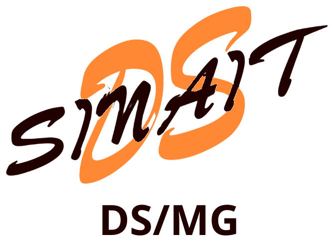

A DS/MG agradece a cada parceiro e fornecedor que esteve ao nosso lado neste ano. Desejamos festas cheias de paz e um 2027 com novos projetos juntos.

Obrigado por levar dignidade a quem trabalha em Minas, todos os dias do ano. Que este Natal seja de descanso, família e paz.
Que o novo ano traga mais valorização da Auditoria-Fiscal do Trabalho, novas conquistas para a categoria e mais trabalho digno em Minas.